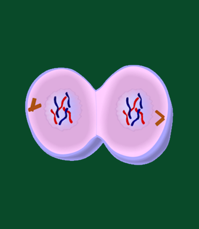

Telophase, the penultimate stage in the mitotic process, represents the culmination of cellular efforts
to accurately segregate and distribute genetic material. Following the decisive separation of sister
chromatids in anaphase, telophase initiates the reversal of key events that occurred earlier in mitosis.
Chromosomes, having reached their respective poles, undergo decondensation, transforming from distinct,
condensed entities back into a more diffuse chromatin state. This decondensation is crucial as it allows
for the re-establishment of nuclear envelopes around the separated chromosome sets, leading to the
formation of two distinct nuclei within the dividing cell.
Concurrent with chromatin decondensation, the mitotic spindle, a dynamic structure of microtubules
responsible for chromosome movement, disassembles. As the spindle breaks down, microtubules
depolymerize, and centrosomes, which played a pivotal role in spindle formation, move away from each
other. The dissolution of the mitotic spindle and the reformation of nuclear envelopes signify the
conclusion of chromosome movement and the establishment of distinct cellular compartments. This process
ultimately paves the way for the final step in the cell division cycle – cytokinesis.
Telophase concludes with the physical separation of the cell into two daughter cells during cytokinesis.
In animal cells, this separation is facilitated by the formation of a contractile ring composed of actin
and myosin filaments, leading to the division of the cytoplasm and the creation of two distinct daughter
cells, each containing a nucleus with a complete set of chromosomes. Telophase, with its chromatin
decondensation and nuclear envelope reformation, serves as a critical transition point from mitosis to
the subsequent interphase, as cells prepare for their individual functions and activities.
